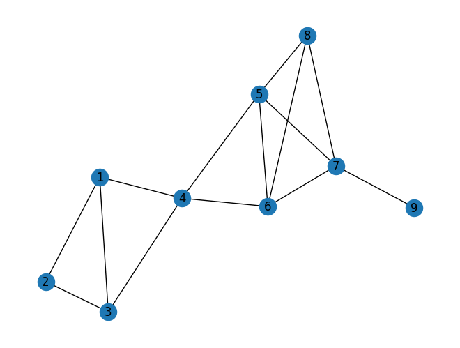

Materi : Graph#
import networkx as nx
import pandas as pd
import matplotlib.pyplot as plt
Membuat Graph#
Menggunakan network x
G = nx.Graph()
G.add_edges_from([(1,2),(1,3),(1,4),(2,3),(3,4),(4,5),(4,6),(5,6),(5,7),(5,8),(6,7),(6,8),(7,8),(7,9)])
Labeling Graph#
nx.draw(G, with_labels=True)
plt.show()

Perhitungan Centrality#
Degree Centrality#
nx.degree_centrality(G)
{1: 0.375,
2: 0.25,
3: 0.375,
4: 0.5,
5: 0.5,
6: 0.5,
7: 0.5,
8: 0.375,
9: 0.125}
Closennes Centrality#
jarak lintasan terpendek
nx.closeness_centrality(G)
{1: 0.47058823529411764,
2: 0.34782608695652173,
3: 0.47058823529411764,
4: 0.6153846153846154,
5: 0.6153846153846154,
6: 0.6153846153846154,
7: 0.5,
8: 0.47058823529411764,
9: 0.34782608695652173}
Betweenes Centrality#
jumlah lintasan terpendek
nx.betweenness_centrality(G)
{1: 0.10714285714285714,
2: 0.0,
3: 0.10714285714285714,
4: 0.5357142857142857,
5: 0.21428571428571427,
6: 0.21428571428571427,
7: 0.25,
8: 0.0,
9: 0.0}
Menghitung Page Rank#
pr = nx.pagerank(G, alpha=0.9)
pr
{1: 0.1099909665756163,
2: 0.07710638092052623,
3: 0.1099909665756163,
4: 0.13859436206183584,
5: 0.13664080924847155,
6: 0.13664080924847155,
7: 0.14298342856073584,
8: 0.10477012897501789,
9: 0.043282147833708255}